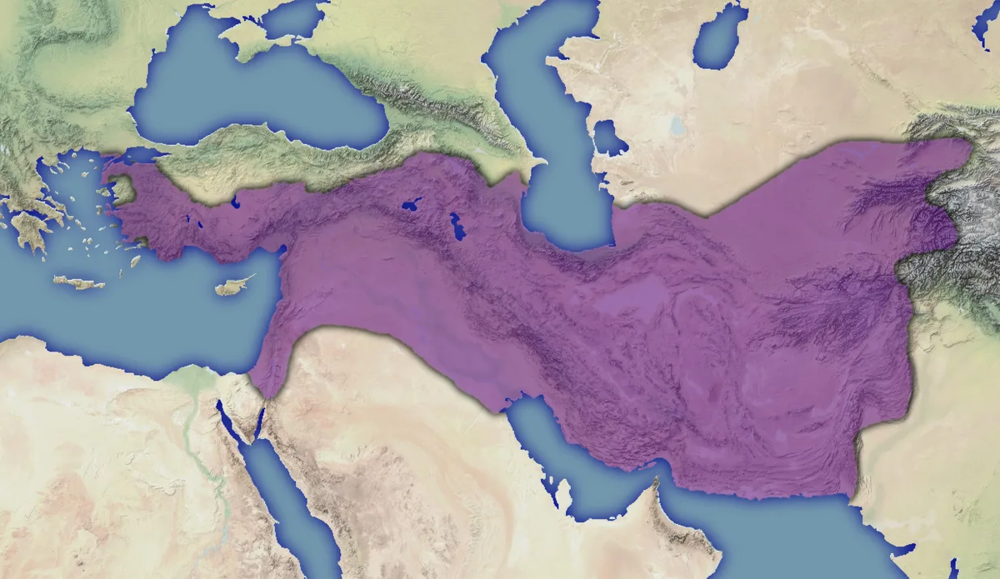

В 323 г. до н.э. Александр Македонский умер. Создан- ная им держава распалась на три государства: Македонское, Египетское и Сирийское. Во главе их становятся его ближайшие полководцы. В 312 г. до н.э. после многочисленных междоусобных войн один из них – Селевк – становится правителем Вавилона (Сирийское государство). В состав его государства вошли Двуречье, Персия, Парфия, Бактрия, Согдиана и Маргиана.
В 250 г. до н.э. от государства Селевкидов отделяется Бактрия и правитель многих бактрийских городов Диодот объявил себя царём. Так начинается история Греко- Бактрийского царства, соперником которого становится Парфия, также в 250 г. до н.э. отделившаяся от государства Селевкидов. Кроме Бактрии в состав Греко- Бактрийского цар- ства вошли Согдиана и Маргиана. После Диодота и его сына власть в Греко- Бактрии перешла к Евтидему, правление которого не оставило заметных следов в истории государства. В годы правления сына Евтидема – Деметрия Греко- Бактрийское царство достигло наибольших размеров. С приходом к власти в Парфии Митридата I им была завоёвана Маргиана. Греко- Бактрийское царство вынуждено было вести непрерывные войны, которые привели к его ослаблению. Этим воспользовались кочевые племена юечжей и между 140 - 130 гг. до н.э. завоевали его.